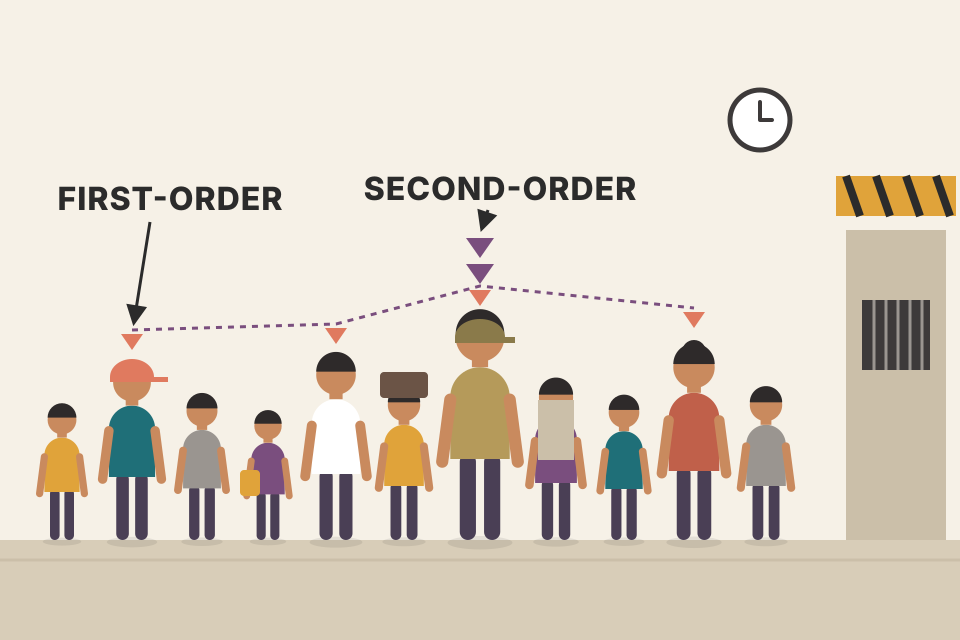
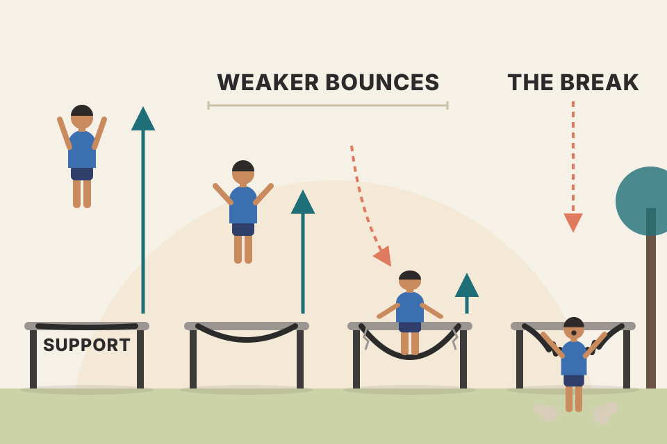
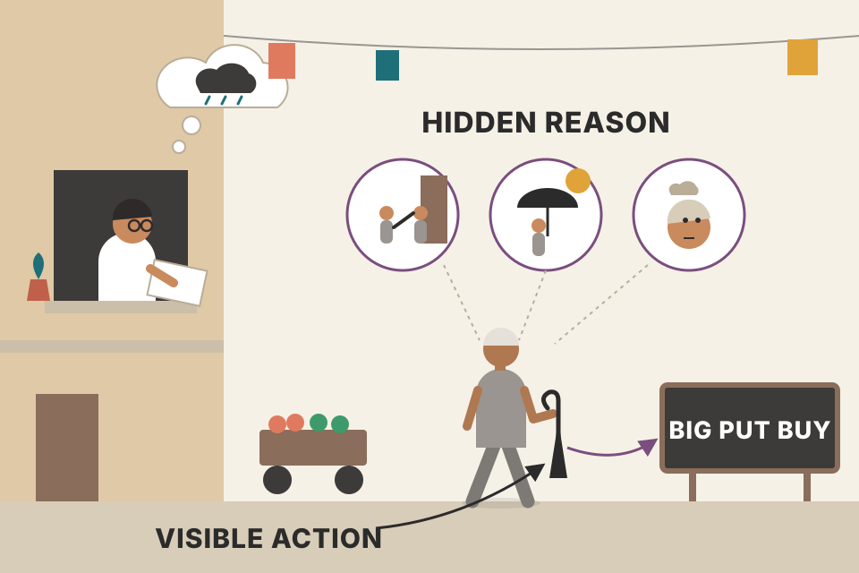
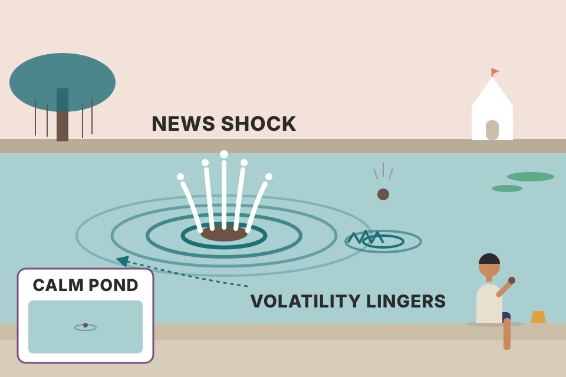

Module 1 looked at single bars. This module looks at how bars relate to each other: pivots, then swings, then trends and ranges, then support and resistance. Three essays close it: how little we really know, how to read a trend's strength from its breakouts, and why volatility comes in clusters. Every chart on this page uses simulated prices built to show one idea; the book's own charts are real markets, described here in words. Press the button to roll fresh markets and see which ideas survive.
The module climbs a ladder. Each rung is built only from the one below it, so a mistake low down (a wrongly marked pivot) carries all the way up to a wrong trend call.
Grimes lays out the module as a chain of ideas, each leading to the next:
Bars are letters. Pivots are the ends of words. Swings are sentences. Trends and ranges are paragraphs. You can't read a paragraph if you can't find where the words end, and that's why the module starts with dull-looking pivot drills.
Each level throws away detail on purpose. A pivot keeps only the turning bars. A swing keeps only the turning prices. A trend label keeps only the order of those prices (higher or lower). That's compression: you trade the noisy bar-by-bar data for a short description you can reason about. The cost is lag, because you can only call a bar a turning point after later bars have printed. You'll see that cost in every plate below.
The introduction promises an EMH discussion, but the workbook pages for this module (pdf p75–103) contain no separate EMH section; it was probably in the course videos. The nearest material here is the volatility-clustering essay (section 10), which shows one specific way real prices differ from a pure random walk. In short, the EMH says prices already reflect available information, so you can't reliably beat the market using that information. In its weakest form, that includes past prices, which is exactly what chart reading uses.
The drill is the same for every chart in this section:
The workbook gives six real daily charts to mark, each followed by an answer key: US Dollar/Japanese Yen, the SPDR S&P 500 ETF, 30-year US Treasury Bond futures, Gold futures (Dec 2017 contract), Apple, and 10-year US Treasury Note futures, all running roughly February to September 2017. In the keys (as I read them off the images) a dot above a bar marks a pivot high and a dot below marks a pivot low; a second-order pivot gets a second, stacked dot.
His study advice: take your time and work only while you're engaged. When you get tired and lose interest, stop. Cramming doesn't help. Spreading the work over a longer period gives your eyes and brain time to get used to seeing data this way.

A first-order pivot high is a single person standing taller than the people right next to them in a queue. A second-order pivot high is one of those "tall in their spot" people who is also taller than the previous and next tall person. You're zooming out one level: from bars to bumps, then from bumps to bigger bumps.
In practice mode the key is hidden. Click (or tap) above the middle of a bar to mark a pivot high, below the middle to mark a pivot low; click again to remove it. Then press "Check my marks".
Six bars with highs 50.2, 50.9, 50.6, 51.4, 51.4, 50.8.
Confirmation lag. A first-order pivot needs one more bar, so it's always known one bar late. A second-order pivot needs the next first-order pivot of the same kind to be confirmed, so its lag is variable and often several bars. That's the price of the extra filtering.
Density. On noisy data, first-order pivots are everywhere (on a random-walk chart, roughly one bar in four is a pivot high, and about as many are pivot lows). Second-order pivots keep about a third of those. Each level keeps the important turns and drops the jitter, like using a coarser ruler. Watch the counts in the readout when you roll new markets.
Why mark by hand? A computer finds these in a millisecond, and the step-through above does exactly that. The point of the drill is to train your eye to see structure at a glance, which you'll need on live charts where nobody marks pivots for you.
tori_trendlines_explained.md uses a different pivot: a swing high is the highest high of the 5 candles on each side, confirmed 5 candles later. That sits roughly between Grimes's first and second order: stricter than 1-bar pivots, with a fixed 5-bar lag instead of a variable one.The swing charts show only the zig-zag line joining swing highs and lows. Label them using strict trend definitions:
The first four charts are hand-drawn to show the simple patterns of trend change. They follow the rules neatly, so you'll probably find them easy. The first one is solved as an example. An uptrend makes a lower high, so it becomes R. When price then falls through the last swing low (the dotted line), you have a lower high plus a lower low, so it's DT. Later in the decline the market holds a higher low (R again). When it breaks above the last swing high, it becomes UT.
The other twelve charts come from real markets and timeframes from 1 minute to monthly, including two that span several years (about 2014–2017 and 2004–2017) and an intraday one. Apply the rules strictly and expect them to be harder. Every pattern can be reduced to the simple rule set, but some have puzzling turns.
Grimes also asks you to think about the value and the limits of this analysis. What would happen if you bought every time you marked UT and sold short every time you marked DT? He doesn't want careful records, only a gut feel for the answer. His view: this isn't a stand-alone trading method, but it's a solid base for understanding market action.
A staircase. Going up, each step's top is higher than the last and each landing is higher too (UT). The moment one step is lower than the one before, you're no longer sure you're climbing: you're on a landing (R). You only call it a staircase down after you have both a lower top and a lower landing.
Each run is a fresh simulated market of 400 bars with zero drift. Positions use only pivots confirmed by that bar's close. Bars of the histogram are counts of markets by net result. Simulated, not evidence about real markets. The "built-in" markets had memory deliberately coded into their returns, so any profit there was put in by me, not found.
The labels are a state machine. The state is UT, DT or R. It updates on two kinds of event: a new swing point gets confirmed (which changes the high-vs-high or low-vs-low comparison), or price breaks through the last swing high or low during a leg. Each event flips only one of the two comparisons, which is why you can't jump from UT (both up) to DT (both down) without passing through R (one up, one down). The "must go through R" rule falls straight out of the definitions.
Why it isn't a system on its own. The labels only describe what has already happened. On a pure random walk, knowing that the last two swings were higher tells you nothing about the next one, so the strategy earns about zero before costs and loses the costs. It makes money only if the market has trend persistence, and loses if the market mean-reverts. Try the four market types. The UT/DT label is a lens for reading structure; the edge has to come from somewhere else (later modules: pullbacks, failure tests, context).
Timeframes. The same rules work on 1-minute and monthly charts because the definitions don't depend on time. Only the number of bars inside each swing changes.
tori_trendlines_explained.md uses the same rule for bias: higher highs + higher lows = uptrend, lower highs + lower lows = downtrend.backtest_results_summary.md found that the daily breakout was no better than simply holding the same stocks, and the daily pullback was about equal to cash. That's the real-market version of "structure alone isn't an edge". The weekly pullback, which adds a trend filter and an entry trigger, is what worked.Each chart in this section has specific points marked (A, B, C…). At every point you discuss four things:
Many charts add their own questions. The work still looks backward, but you can start thinking about using these tools in real time. Everything is clearer in hindsight. You might not have been able to predict every case reliably, but you would at least have been alerted to watch the action around earlier support or resistance.
| Chart (real market) | What it's there to teach (my summary of its questions) |
|---|---|
| E-mini S&P 500, 15-minute, day session (pdf p91) | The day's high and low act as reference levels for intraday trading. At each marked bar: was price rejected? Was it a repeated test of the same level? Would you have expected the level to hold or break, and were you right? |
| Sugar No. 11 futures, daily (p91) | A classic trading range. Read points A–E as the range develops. F and G are plain action against support and resistance: what do they say about market dynamics? |
| Euro / US Dollar, daily uptrend (p92) | Resistance here is simply the high-water mark of the trend: the pivot high at the last trend extreme. At each level, judging by the bar that touched it (broke or backed off), would you expect higher prices, and were you right? |
| Euro / US Dollar, daily downtrend (p92) | Action around support: how a level breaks, whether the bars before it gave information, whether a bounce was price rejection, a failure at E, and how a large area (F) develops. |
| 30-year US Treasury Bond futures (p93) | A trading range developing over months: a surprise pair of bars, tests of resistance, a wide area with several tests, how the level finally breaks. The lesson: textbook patterns matter, but real ones are richer and more complex. |
| E-mini NASDAQ-100 futures (p93) | Action at support and within a range's limits. Support and resistance are zones, not exact prices. Why the first low wasn't a test of support; price rejection at the top. |
| Euro / Turkish Lira (p94) | Chosen to be hard. Where is support when the lows don't line up? Would you have expected a rally at E? What's different at G? How hard would this have been in real time? |
| Amazon (p94) | Several ways to draw the ranges. A false break above the top of a range (D), two different breaks (E, F) and why G looks different. Bar H is a surprise of the kind markets throw at traders. |
| Natural Gas futures (p95) | Is a falling stretch a downtrend or a range widening downward? Should support be redrawn higher? There are no definite answers, but you should still ask. |
| Health Care Select SPDR (p95) | Simple tests, rejection or not, a breakdown that fails, and a breakout seen as nothing more than resistance failing to hold. |

Support is a trampoline that's a bit worn out. The first jump on it bounces well. Each later jump stretches it more, and the bounces get weaker. You watch how the person comes in (fast or slow), how they land (springy or sagging), and how high they go afterwards. One day the fabric tears: that's the break.
| Test | Level | Before: move into it (ATR) | At: rejection wick | After: next 5 bars (ATR) | Outcome |
|---|
Resistance is drawn as Grimes defines it in the uptrend chart: the pivot high at the last trend extreme. Support is the low of the first pullback from it. A test is any group of bars that reaches into the zone. Widen the zone and watch near-misses turn into tests, which is the NASDAQ chart's point about zones. My measures (not in the book): before = the 5-bar move into the level, in ATR; at = how much of the touching bar's range is the wick pointing at the level; after = the 5-bar move away from the level, in ATR (positive = bounced).
A level matters only because people remember it: orders and stops cluster near old highs and lows, and the people who bought or sold there react when price comes back. Since those orders are spread over a band rather than one tick, the level behaves like a zone. Price rejection (a long wick back away from the level and a close away from it) shows the orders there absorbed the push. A slow, grinding approach with shrinking pullbacks shows pressure building, and repeated tests often wear a level down. A false break (through, then quickly back inside) traps the traders who acted on the break, and their exits push price the other way. None of this is certain. That's why the drill asks what you'd have expected and whether you were right, so you learn how often your reading works.
backtest_results_summary.md trade the same kind of intraday reference level: the 5-minute long + short version held up on Nifty 200 as a lead to paper trade, while the 15-minute version failed the re-check.This is the last module with dedicated chart-story work. There are no set examples this time; take them from current markets. This week, look at markets you trade or want to trade and think about the action at interesting points as a chart story. Save the charts (screenshot or printout) to look at again later.
Learning to read a new script. At first you sound out each letter on purpose. After a couple of weeks you read words at a glance, and drilling a thousand more letters adds little. The chart story is the sounding-out stage.
Short, spaced sessions beat one long session because recognition is a perceptual skill: your brain needs repeated exposure with sleep in between to build the "glance" that experienced traders have. Plateauing after 20–30 stories also makes sense. Once you've learned to ask the questions automatically, more of the same drill adds less than real-time practice does.
Keep charting by hand. It's still valuable, and you should continue it for the next few modules. Module 1 described several ways to do it; which one you pick doesn't matter much. What matters is that you do it.
It shouldn't eat your time either. A few minutes every day (every single day), or a few minutes each hour if you trade intraday, will reward you with a deep understanding of price action.
Copying a map by hand versus glancing at a photo of it. After you copy it, you know where every river bends. Drawing each bar forces you to notice where it opened, how far it reached, and where it closed relative to yesterday.
Drawing a bar takes a few seconds per number, and in those seconds you compare it with yesterday (higher high? inside bar? close near the low?). That's the pivot and swing work of sections 02–03 done live, one bar at a time, with no hindsight. It's the slow, deliberate version of the real-time reading that sections 04 and 09 ask for.
The assigned reading is from Grimes's The Art and Science of Technical Analysis: Market Structure, Price Action, and Trading Strategies (Wiley, 2012). It's longer than last week's and expands on the specific shapes of trends and trading ranges.
| Pages (printed, 2012 book) | Topic | Matches on this page |
|---|---|---|
| 13–18 | Introduction to the two forces; pivots | section 02 (two forces come in Module 3) |
| 19–21 | Basic swing patterns | section 03 |
| 49–64 | Trends | sections 03, 09 |
| 97–120 | Ranges | section 04 |
| 78–84 & 93–96 | Trend analysis | sections 03, 09 |
Note: the 2012 book itself isn't in your library. The file THE ART AND SCIENCE OF TECHNICAL ANALYSIS - PDF Room.pdf is this workbook, despite its name (see books/trading/AGENTS.md).
We're all overconfident and make too many assumptions. Grimes's example: a few years earlier, technical analysis was swept up in the idea of trading failed patterns, especially failed breakouts, sold as reliable because they trap traders who then panic out. But a pattern is just a pattern, failed or not. All we can ever have is a slight tilt in the probabilities: a hint of a small departure from randomness over the life of a trade.
One of the biggest mistakes is assuming everyone sees the market the way we do. Technicians may be worse than most at this. You'll find many bar-by-bar chart walkthroughs that narrate what traders were supposedly thinking at each point. That has serious problems:
The point is a gentle reminder to respect the randomness of markets and the limits of what we know. Grimes finds the epistemological questions fascinating. What do we really know about markets and human behaviour? How do we know it? How do we know that knowledge is valid? Assumptions are dangerous because they breed overconfidence, hubris and possible ruin. Managing risk takes flexibility, adaptability and, above all, humility and respect.

You see a neighbour carrying an umbrella and decide it will rain. Maybe they're returning a borrowed umbrella, or it's a sunshade, or they're just cautious. The action is visible; the reason isn't. A big put purchase is the umbrella.
Stock at ₹100. Own 400 shares, buy 1 put contract (100 shares) with a ₹95 strike for ₹2.5 per share. At expiry with the stock at ₹80: shares lose ₹8,000, the put pays (95 − 80 − 2.5) × 100 = ₹1,250, so the net is −₹6,750. With the stock at ₹120: shares gain ₹8,000, the put expires worthless (−₹250), so the net is +₹7,750. The tape shows "big put buyer"; the book of the person who bought it is long. Set put contracts to 4 with 400 shares and losses below the strike are capped: a protected long, still bullish. Set shares to 0 and it really is a bearish bet. Same print, three different stories.
A continuous futures chart glues expiring contracts together. If the next contract trades higher than the expiring one at the roll date, an unadjusted chart shows a jump that nobody traded. A back-adjusted chart removes the jump by shifting all older prices by the gap. Then every old high and low, and so every "support level", sits at a different number. Two traders looking at "the same" chart of the same future can see support at different prices. On NSE, stock and index futures roll monthly, so check how your charting platform builds its continuous contract before drawing levels on it.
Order flow is a sum over thousands of motives: hedging, rebalancing, index flows, cash needs, options market makers adjusting delta, and a few people reading the same pattern you are. You see the net result, not who did it or why. A pattern can only tilt the odds a little, because the pattern traders are a small, noisy slice of that sum. And the counterparty to your breakout buy is usually a market maker or a passive seller who wanted out at that price for their own reasons, not someone betting against you.
order_flow.md: every trade has a buyer and a seller, but what matters is who was in a hurry, the aggressive market order or the passive limit order waiting in the book. When your breakout market-buy fills, the other side is usually a resting limit order placed for its own reasons, not a bet against your idea.Price patterns can point to trading opportunities and profits. That's a basic assumption of technical (tactical) trading, and Grimes says it can be checked with quantitative and statistical analysis. Patterns are useful for more than entries and exits: a simple pattern can tell you about the health of the trend and, at a high level, about sentiment and market structure.
Many of the most useful patterns are variations on the pullback. Trending markets alternate between with-trend strength and pullbacks or pauses against the trend, which then break out into new trend legs. That's the theory, and it works often enough that you can build a whole trading programme on it.
You can go further by judging the strength and character of the move out of the pullback. This crosses from the clear and objective into the subjective, but it can be learned with modest experience: weeks to learn the idea, months (not years) to get very good at it.
His example: a daily chart of the US Dollar Index from about December 2014 to April 2015, uptrending for at least part of that time. Arrows mark where price broke out of bullish consolidations. Before a vertical line, with one exception (marked "?"), the breakouts had conviction: they quickly reached new highs, barely paused, and started new legs that then consolidated higher up. After the line, on the right side of the chart, three attempted moves up failed quickly. That tells you something has changed: the market's character has changed, maybe it's entering a new regime, and the long trades you'd set up there are probably lower-probability than earlier.
The objection: "That's just history. Of course breakouts worked while the market rose and failed once it stopped." Fair enough, but you can make this judgement in real time. Judge each breakout as it happens against your mental picture of what should happen if the trend is intact. It's subtle, but it can be learned.
The exercise: pick a market you follow closely and watch the right edge of the chart. Don't go back through history; that's too easy. This has to be done as it unfolds. When the market pauses or consolidates against the trend, watch the character of the move out of it, compare it with earlier moves, and ask what you should see if the trend were strong. Do this for a few weeks. That small shift in attention is what makes the difference, and you may end up seeing the market with new eyes.
A runner on a long climb. Early on, after each short rest, they spring straight back to full pace. Later, after a rest, they take two strides and slow to a walk. You don't need to know they're tired to see it; how they leave each rest gives it away.
| # | Bar | Follow-through: best gain in next 5 bars (ATR) | Still above breakout level after 5 bars? | Character |
|---|
Breakout rule used here (mine, not the book's): a close above the highest high of the previous 10 bars, after at least 4 bars without such a close (a pause). A green up-arrow is a breakout with conviction (≥1 ATR of follow-through and still above the level 5 bars later); a red one failed. Slide "bars revealed" back and step forward: you only see a breakout's result 5 bars after it happens, like at the real right edge. The dashed line is where I switched the simulation from trend to topping. The real chart had no such label; you have to infer it.
A breakout from a consolidation tests whether there are still buyers willing to pay higher prices right away. In a healthy trend, new buyers are waiting, so price clears the old high and keeps going. When the trend is tiring, the breakout draws in late buyers, nobody follows, and their stops below the consolidation turn into selling. Follow-through measures exactly that. It's an early, noisy warning, not proof: one weak breakout (the book's "?") doesn't end a trend, but a run of them is information. Note that the simulation has the regime change coded in, so the falling quality here is by construction. It shows what to look for; it doesn't prove the signal works in real markets.
backtest_results_summary.md: the weekly pullback (weekly uptrend, dip to the 20-week EMA, buy when a week closes above last week's high) was the swing strategy that worked best out-of-sample. That's the "pullback, then break into a new leg" idea from this essay, turned into rules.Many books put randomly generated charts beside real ones, and it's often hard to tell which is which. Some people conclude that since patterns show up on random charts too, using price patterns is pointless and all technical analysis is invalid. Grimes says that conclusion is itself flawed in several ways.
Random charts are a useful training tool, and the ways real charts differ from random ones point to opportunities. One of the biggest differences is how volatility is spread through the chart. A random walk has no memory: each step is independent of the past. Real data is different: large price changes are much more likely to be followed by more large changes, and small changes by small ones.
The likely reason: markets react to new information with big moves, and those high-volatility conditions last a while after the first shock. The literature calls this the persistence of volatility shocks, and it produces volatility clustering. His charts show several years of daily changes for the S&P 500 cash index, Euro/US Dollar, Gold futures and Coach Inc (a single stock), plotting the absolute size of each day's change in standard deviations and showing only days beyond 2.0 standard deviations. It's hard to see by eye, but the spikes aren't scattered randomly: they bunch together in certain periods and tend to follow earlier spikes. The single stock's chart is annotated with the note that individual stocks often get large shocks about four times a year, driven by earnings and guidance.
This is autocorrelation of volatility: volatility correlated with its own past. Even if price changes themselves were random and unpredictable, you can predict something about the size (absolute value) of the next change from recent changes. That's a serious violation of random-walk models, but don't assume it means easy money. There's still a lot of noise, and educated market participants know about clustering even if some individual investors don't. Derivatives are priced with it in mind, so as always, there's no free lunch.
There are academic models that capture this well: ARCH (autoregressive conditional heteroskedasticity), GARCH (generalized ARCH) and EGARCH (exponential GARCH). They are time-series models that handle volatility changing over time. A simple random walk has no memory; ARCH-family models know about recent volatility. A loose but useful way to think of them: a random walk plus an extra component, a series of random errors (residuals) whose size is set by recent history. The assumption is that information reaches the market randomly, at unpredictable times, and that each information shock fades over time, like the waves from a big stone thrown into a pond. Standard references he gives: Campbell, Lo and MacKinlay (1996) and Tsay (2005). (The book spells the first author "Campell".)
In practice everyone should understand clustering. Options traders must, because the options market already largely prices it in. Directional traders, portfolio managers and risk managers need it too. After a volatility shock, the best bet is that more volatility is coming in some form; don't expect a quick return to quiet. The important caveat: this volatility has no direction. A big move up can be followed by a volatile stretch that goes up, down or sideways, so don't assume a big up move means more upside. What's unusual is a market that turns volatile and then immediately goes quiet again. Shocks persist and big moves lead to more big moves. As he puts it: "Volatility begets more volatility."

Grimes's own image is a stone thrown into a pond: a big splash, then waves that shrink slowly rather than vanishing at once. Each new piece of news is a new stone. On a calm pond, a small pebble barely shows. Throw a pebble just after a boulder, and the ripples are still big.
Take long-run daily volatility σ̄ = 1%, α = 0.08, β = 0.90. Then ω = 0.0001 × 0.02 = 0.000002. Yesterday σ was 1% and the market moved 4% (a 4σ day). Today's variance = 0.000002 + 0.08 × 0.0016 + 0.90 × 0.0001 = 0.00022, so σ ≈ 1.48%: one shock raised tomorrow's expected move by nearly half. The extra variance then shrinks by a factor of α + β = 0.98 per day, a half-life of ln 0.5 ÷ ln 0.98 ≈ 34 days. Spikes in the charts above are |return| ÷ the standard deviation of the whole sample, which is my choice; the book doesn't say which window it used.
Look at the third chart. The autocorrelation of |return| stays clearly positive for many lags in the GARCH market. That's the memory in size. The autocorrelation of the return itself stays around zero, so there's no memory in direction. That's the book's point in two lines: you can forecast how big tomorrow's move is likely to be, not which way it goes. In the random walk, both are flat. Set α to 0 and the GARCH market turns back into a random walk. Raise β and shocks linger longer: the pond's waves fade more slowly.
trading_equations.md §12 has the same GARCH(1,1) formula, with typical equity-index values α ≈ 0.05–0.10 and β ≈ 0.85–0.93 (the defaults here sit inside those ranges).backtest_results_summary.md shows the no-free-lunch point in practice: the GARCH size cut gave no consistent improvement, and the volatility-managed Nifty (Merton + GARCH) had smaller drawdowns but less return than holding. Knowing the size of moves helped risk, not profit.price_physics_basics.md: you can predict how far price may move much better than which way, which is why stops are set with ATR. Same idea.No. Each one is only equal to, not higher than, the other, and the strict rule needs a high above both neighbours. You need a consistent policy for ties (section 02).
First order: at the close of bar 41. Second order: only when the next first-order pivot high after it (lower than it) is itself confirmed, which can be many bars later. The extra filtering costs a variable lag (section 02).
R. A lower high with a higher low is neither UT nor DT (section 03).
No. The highs now compare as higher, but the lows are still lower, so it's R. It needs a higher low too. The "UT and DT must pass through R" rule follows from each event changing only one of the two comparisons (section 03).
The labels describe the past. On a memoryless market they earn about zero before costs. They pay only when the market has trend persistence, and lose when it mean-reverts. Grimes calls swing labelling a foundation, not a stand-alone method (section 03).
The action leading up to the touch, the action at the touch, the action after it, and any surprises (section 04).
As the high-water mark of the trend: the pivot high at the last trend extreme (section 04).
Support and resistance are zones, not exact prices (section 04). My reading of point A: it is where the support level was first formed, so there was nothing yet to test.
They might hold far more stock and be hedging part of it, which is bullish overall. Trades have motives we can't see (section 08).
Basic microstructure: fills come from people buying and selling for all sorts of reasons (market making, rebalancing, exits), not from a single opponent betting against your idea (section 08).
The market's character may have changed (a new regime), so long setups are lower-probability. It isn't only hindsight because you can judge each breakout in real time against what an intact trend should do (section 09).
More volatility, not necessarily more upside. Clustering is about size, not direction, and shocks persist rather than vanishing (section 10).
There's still lots of noise, and educated participants already know it. Options and other derivatives are priced with it in mind (section 10). Your own GARCH sizing tests gave less return, not more.
α + β = 0.98, so ln 0.5 ÷ ln 0.98 ≈ 34 days (beyond-the-book formula, section 10).
Twenty or thirty probably will; a thousand won't. Three to five minutes a day for two weeks beats hours in one day (section 05).